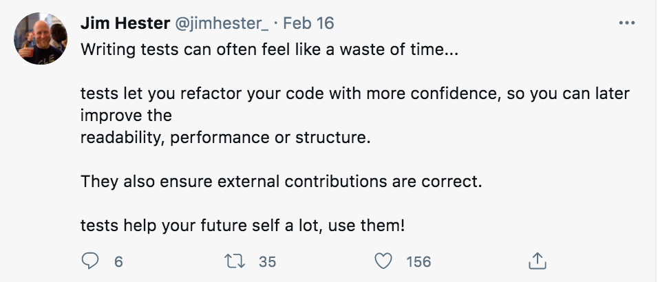

Code Testing#
smoke tests
unit tests
pytest
Writing Good Code#
All in all, write code that is:
Well organized (follows a style guide)
Documented
Tested
And you will have understandable, maintainable, and trustable code.
Class Question #1#
Given the following code, which assert will fail?
def extend(input_arg):
output = input_arg.copy()
for element in input_arg:
output.append(element)
return output
# test here
A)
assert type(extend([1, 2])) == listB)
assert extend([1, 2]) == [1, 2, 1, 2]C)
assert extend((1, 2)) == (1, 2, 1, 2)D)
assert extend(['a', 'b', 'c']) == ['a', 'b', 'c', 'a', 'b', 'c']E)
assert extend([]) == []
Clicker Question - Asserts#
# Check that extend returns a list
assert type(extend([1, 2])) == list
# Check that an input list returns the expected result
assert extend([1, 2]) == [1, 2, 1, 2]
# Check if the function works on tuples
assert extend((1, 2)) == (1, 2, 1, 2)
# Check that a different input list (different lengths / contents) returns expected result
assert extend(['a', 'b', 'c']) == ['a', 'b', 'c', 'a', 'b', 'c']
# Check that an empty list executes, executing an empty list
assert extend([]) == []
Code Testing#
Levels of Code Testing:#
Smoke Tests
Unit Tests
Integration Tests
System Tests
Four general types#
Smoke tests - preliminary tests to basic functionality; checks if something runs (but not necessarily if it does the right thing) (gut check)
Unit tests - test functions & objects to ensure that they code is behaving as expected
Integration tests - tests functions, classes & modules interacting
System tests - tests end-to-end behavior
Unit Tests#
one test for each “piece” of your code (each function, each class, each module, etc)
passes silently if true
error if it fails
consider “edge cases”
help you resist the urge to assume computers will act how you think it will work
functions used with pytest start with
test_
Why Write Tests#
To ensure code does what it is supposed to
To have a system for checking things when you change things in the code
Tests, when run, help identify code that will give an error if something has gone wrong.
The Best (Laziest) Argument for Writing Tests#
Whenever you write new code, you will find yourself using little snippets of code to check it.
Collect these snippets into a test function, and you get re-runnable tests for free.

Source: https://twitter.com/jimhester_/status/1361697676832739328
How to Write Tests#
Given a function or class you want to test:
You need to have an expectation for what it should do
Write out some example cases, with known answers
Use
assertto check that your example cases do run as expectedCollect these examples into test functions, stored in test files
Example Test Code#
What the function should do: add two inputs together
def add(num1, num2):
return num1 + num2
import math
def test_add():
"""Tests for the `add` function."""
# Test adding positve numbers
assert add(2, 2) == 4
# Test adding negative numbers
assert add(-2, -2) == -4
# Test adding floats
#assert add(2.7, 1.2) == 3.9
assert math.isclose(add(2.7, 1.2), 3.9)
# Test adding with 0
assert add(2, 0) == 2
# Run our test function
test_add()
Class Question #2#
If you were asked to write a function remove_punctuation that removed all the punctuation from a given input string…what are some things that would be True of the output of that function (and therefore what assert statements would you write)?
A) I’ve got some ideas!
B) I tried but I’m stuck.
C) I’m lost/don’t understand what we’re supposed to be doing.
Brainstorm here…
# assert statements here
assert remove_punctuation("Hello!") == "Hello"
assert remove_punctuation("!Hello") == "Hello"
assert remove_punctuation("He?llo") == "Hello"
assert remove_punctuation("He,ll>o") == "Hello"
assert remove_punctuation("Hello") == "Hello"
assert remove_punctuation("#$%^$%") == ""
assert remove_punctuation("Hello!" + " There!") == "Hello There"
assert remove_punctuation("") == ""
# test function here
# function here
def test_remove_punctuation(input_string):
assert remove_punctuation("Hello!") == "Hello"
assert remove_punctuation("He'llo!") == "Hello"
assert remove_punctuation("He\"llo!") == "Hello"
assert remove_punctuation("!Hello") == "Hello"
assert remove_punctuation("He?llo") == "Hello"
assert remove_punctuation("He,ll>o") == "Hello"
assert remove_punctuation("Hello") == "Hello"
assert remove_punctuation("#$%^$%") == ""
assert remove_punctuation("Hello!" + " There!") == "Hello There"
assert remove_punctuation("") == ""
Class Question #3#
# Given the following function:
def divide_list(in_list):
output = []
for el1, el2 in zip(in_list[1:], in_list[0:-1]):
output.append(el1 / el2)
return output
# And the following test function:
def test_divide_list():
assert callable(divide_list)
assert type(divide_list([1, 2])) == list
assert divide_list([1, 2, 4]) == [2, 2]
test_divide_list()
A) These tests will pass, and this function is well tested
B) These tests will pass, but this function needs more tests
C) These tests will fail, but they cover the needed cases
D) These tests will fail, and we should also have more tests
divide_list((0,2,3))
Test Driven Development#
Test Driven Development#
Ensures you go into writing code with a good plan / outline
Ensures that you have a test suite, as you can not decide to neglect test code after the fact
Note: when you complete (or at least write) assignments for this class, you are effectively doing test-driven development
Test Coverage#
Class Question #4#
Write a test function that checks the following piece of code:
def sum_list(input_list):
"""add all values in a list - return sum"""
output = 0
for val in input_list:
output += val
return output
A) I did it!
B) I think I did it!
C) I’m lost.
Thought process:
Define test function
def test_...make
assertion within the test functioncheck that the function is callable
check the output is expected output / expected type
check that function sums the list (which was our expectation)
def test_sum_list():
# YOUR CODE HERE
test_sum_list()
### POSSIBLE TEST
def test_sum_list():
# write multiple asserts
assert callable(sum_list)
assert type(sum_list([1, 2, 3, 4])) == int
assert sum_list([1, 2, 3, 4]) == 10
test_sum_list()
Testing Code: when input() is used#
def get_input():
"""ask user for an input message
Returns
-------
msg : str
text specified on input by user
out_msg : None
always returns None; subsequent functions would return a more specific out_msg
"""
msg = input('INPUT :\t')
out_msg = None
return msg, out_msg
get_input()
import mock
import builtins
def test_get_input():
# specify after lambda what you want function to use as "input"
with mock.patch.object(builtins, 'input', lambda _: 'Hello'):
# execute function and specify something that asserts True
msg, out_msg = get_input()
assert msg == 'Hello'
assert out_msg == None
test_get_input()
print statements as its output, it will *not* be testable. Consider this during development/planning!
PyTest#
pytest#
check if error raised when expected to be raised
autorun all of your tests
formal testing to your code/projects
Executing pytest#
Look for any file called
test_...If everything works, silently moves along.
For anything that fails, will alert you.
Available from Anaconda and on datahub
!pytest test_sums.py